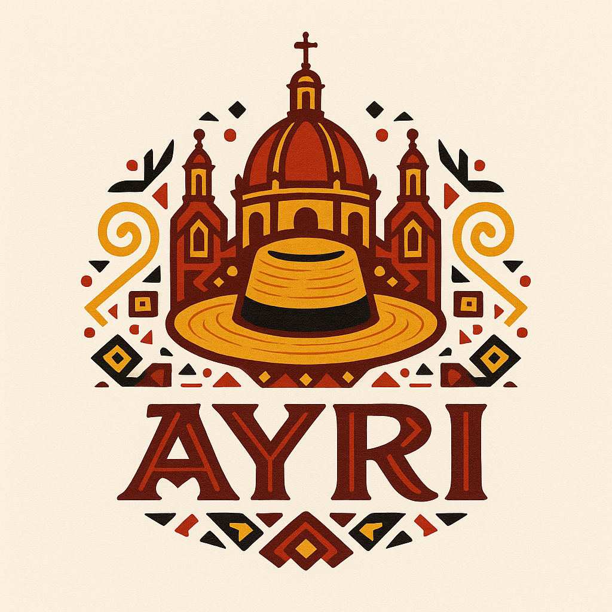

Somos un equipo de jóvenes estudiantes comprometidos con la preservación y promoción del patrimonio cultural de Cuenca, la Atenas del Ecuador. Nuestro objetivo es acercar a la ciudadanía especialmente a las nuevas generaciones al legado histórico y artístico que resguardan los museos de nuestra ciudad.
Creemos que la tecnología es una herramienta poderosa para conectar el pasado con el presente. Por eso, desarrollamos esta plataforma web interactiva que reúne información clara, visual y accesible sobre los museos de Cuenca, fomentando el turismo cultural y el orgullo local.
Esta iniciativa nace como parte de un proyecto integrador de saberes que combina programación, diseño, investigación cultural y compromiso social. Nuestra meta es que más personas descubran, visiten y valoren los espacios culturales que nos definen como cuencanos.